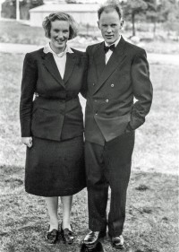
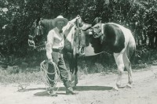

Johan Jakobsen
M, #126, f. 1770
Foreldre
Biografi
Johan Jakobsen ble født i 1770.
| Sist redigert |
13 april 2010 00:00:00 |
| Slektskap | Bror av 3.tippoldefar/mor til Lovise Julie Eggan |
Niels Einersen
M, #127, f. 1753, d. 1807
Foreldre
Biografi
Niels Einersen ble født i 1753 på/i Gnr 60, Kjelbotn, Fosnes, Nord-Trøndelag. Han giftet seg med
Beret Hermannsdatter i 1782. Han døde i 1807 på/i Fosnes, Nord-Trøndelag.
| Sist redigert |
11 september 2010 00:00:00 |
| Slektskap | 3. tippoldefar til Lovise Julie Eggan |
Ingebrigt Ingebrigt
M, #128, f. før 1716
Biografi
Ingebrigt Ingebrigt ble født før 1716.
| Sist redigert |
13 april 2010 00:00:00 |
| Slektskap | 5. tippoldefar til Lovise Julie Eggan |
Håkon Hansen
M, #129, f. 22 mai 1894, d. 28 oktober 1967
Foreldre
Biografi
Håkon Hansen ble født den 22 mai 1894 på/i Tømmervikenget 26/9, Horvereid; Kolvereid, Nærøy, Nord-Trøndelag. Han giftet seg med
Dagny Sedorie Laugen den 12 desember 1924 på/i Kolvereid kirke, Nærøy, Nord-Trøndelag.

Han døde av kreft den 28 oktober 1967 på/i Namdal sykehus, Namsos, Nord-Trøndelag. Han ble gravlagt den 3 november 1967 på/i Lundring kirke, Nærøy, Nord-Trøndelag
+.
Håkon Hansen ble døpt den 5 august 1894 på/i Kolvereid kirke, Nærøy, Nord-Trøndelag. Faddere var bl.a. moster Henriette Nakling og ektemann Edvard Petersen.
Han ble konfirmert den 10 juli 1910 på/i Kolvereid kirke, Nærøy, Nord-Trøndelag.
Håkon måtte - som vanlig var på den tiden - tidlig ut i arbeid. Allerede som ni-åring var han alene med hest i vedskogen. I lang tid var han på lensmannsgården i Mulstadnesset. Her var det mye og mangt å observere. Han fikk også være skysskar, bl.a. for distriktslegen som på turen kunne underholde med sitt syn på folk og helse.
Det ble arbeid på forskjellige felt både i og utenfor bygda, alt fra gårdsarbeid, grøftegraving og også en tid som fartøykar hos Sigvard Fossaa.
En tid var Håkon gårdsgutt på Stod - han var sprek og jobbet hardt, så her fikk han dobbel betaling.
Han kjøpte i 1923 Tvilstad 26/21, Storval, Nærøy, Nord-Trøndelag, for 4.000 kroner av Julie Wahl (3203) og hennes datter Ruth (3205). Banklån på 4.250 kroner ble tatt opp i 1924.
Hjemmelsdokumentet ble ufullstendig utformet, og etter mye frem og tilbake måtte han gi fra seg omtrent halve eiendommen - med bl.a. verdifullt dyrkingsland, skogteig og et stort område torvmyr - til selger.
Eiendommen var tidligere delt med jord og hus og siden huset sto på den andre halvparten, måtte nå Håkon - med hjelp av sin far og en god sag - dele den gamle tømmerlåna i to for flytting til Tvilstad.
Huset sto klart og familien flyttet inn sommeren 1927. Andre hus av verdi var ikke igjen på det delte bruket, så dette måtte bygges på nytt. Fjøs ble tatt i bruk i 1929.
Den dyrka jorda var etter nesten to generasjoner med enkestyre i dårlig forfatning. Det ble derved en stor jobb å sette denne i stand, alt mens Håkon tok dagarbeid omkring i bygda. Da gjerne med hest, siden det var mange små bruk der det ikke ble holdt hest.
Eiendommen hadde ca. 35 dekar dyrket innmark og kunne som regel fø hest, fire storfe og fem sauer.
Hester var Håkon sin store interesse. Foruten temming av unghest og hovslaging, ble han ofte rådspurt ved kjøp av hest. Han holdt èn og til tider to avlshopper så det kunne bli salg av føll eller unghest. Håkon var nevenyttig og lettbent. Slik ble han etter hvert en altmuligmann i bygdelaget. Ymse slag snekring og en del bygdeslakting, og ellers alt fra kastrering av smågris tll dreiing av rokkesneller. I krigsåra da det ble det aktuelt med bereding av huder og skinn, var han god å finne. Ikke så mange kunne denne kunsten mere.
Håkon var kjent for å være en mester i å stakke, dvs. lage høystakker som skulle stå ute om vinteren uten at høyet ble ødelagt av vær og vind. Han kunne også finne vann.
Med de velkjente 30-åra påfulgt av okkupasjonstid og en stor familie å forsørge, ble det nok tunge tak for paret på Tvilstad.
Fra et bevart dokument fremgår det at det i 1937 ble levert 266,5 kg melk til meieriet, som ga oppgjør på brutto kr 38,10.
Håkon var utadvendt og interessert i sine medmennesker og således glad i å slå av en prat. Han var interessert i fortiden og kunne fortelle historier og minner fra egen tid med stor innlevelse.
Han likte lite oppmerksomhet omkring egen person. Når familien sa et hans 70-års dag måtte feires, truet han med å gå tur til Bidalen, et drøyt stykke innover i utmarka.
Han solgte i 1958 på/i Tvilstad 26/21, Storval, Nærøy, Nord-Trøndelag, til eldste sønnen, Einar, mot et rimelig kår og borett.
Yngste sønnen, Svein, syntes foreldrene hadde kommet dårlig ut med hensyn til bolig og kjøpte småbruket Dalan vestre på Torstad og lot foreldrene flytte inn dit i 1962.
Slik ble det enda noen år med litt jordbruk og husdyrhold før det ble pensjon.
På vei over tunet falt Håkon om med sterke smerter i høyre hofte. Sønnene Svein og Hermann fikk båret ham inn, hvor han ble sengeliggende. Mot hans kraftige protester ble etter hvert lege tilkalt, og Håkon ble sendt til sykehuset i Namsos.
Minneord i avisa:
Håkon Hansen, Nærøy, er død 73 år gammel. Ennå ved denne tid i fjor var han i så bra vigør, at han dro rundt i nabolaget og slaketet julegriser. Men i sommer ble han angrepet av en snikende sykdom, som ikke log seg stanse.
Hansen vokste opp på gården Strandhaug i Kolverid. I unge år var han fartøyskar, og dels drev han med løsarbeid, bl.a. grøfting. Iherdig og flink som han var, ble han etterspurt til alt slags arbeid. I 1923 kjøpte han en jordparsell på Storval i Nærøy. Han kom ikke inn under dagjeldende bureisningsregler, og fikk slik ingen støtte til husene, heller ikke forhøyet bidrag til den jord han dyrket.
Barneflokke ble stor, og tidene pinible. Men Hansen slet seg i gjennom. Han var en hagsynt kar, og husene bygde han selv. De fikk kanskje ikke så flott standard, men han var redd gjeld, som forøvrig ikke var så lett å stifte i den tiden.
Jordbruket var ikke drektig til å fø en så stor familie, så Hansen måtte arbeide mye borte. Han drev kjøring med hest i nabolaget både vinter og sommer, og tok ellers arbeid som var å få, bl.a. slakting.
En nøysom sliter, som aldri satte krav til andre enn seg selv, er vandret bort. Men bygdefolk vil minnes ham.
G. (Jørgen Gansmo?)
| Sist redigert |
28 juni 2026 10:56:25 |
| Slektskap | Bestefar til Håkon Wahl |
Dagny Sedorie Laugen
K, #130, f. 23 mars 1900, d. 10 februar 1981
Foreldre
Biografi
Dagny Sedorie Laugen ble født den 23 mars 1900 på/i Laugsjøen, Nærøy, Nord-Trøndelag. Hun giftet seg med
Håkon Hansen den 12 desember 1924 på/i Kolvereid kirke, Nærøy, Nord-Trøndelag.
Hun døde den 10 februar 1981 på/i Kolvereid sykeheim, Nærøy, Nord-Trøndelag. Hun ble gravlagt den 14 februar 1981 på/i Lundring kirkegård, Nærøy, Nord-Trøndelag.
Dagny Sedorie Laugen was also known as Dagny Sedorie Hansen. Dagen før Dagny ble født, kom faren hjem fra skreifiske med fangst og moren gikk ham i møte for å bære hjem fisk. Dette ble nok vel tungt og nedkomsten skjedde dagen etter.
Hun ble døpt den 9 september 1900 på/i Nærøy, Nord-Trøndelag. 22. mai 1915 fikk hun avgangsvitnemål som bekreftet syv års skolegang ved Laugen skole. Lærere hadde vært Inga Stavset og senere Aksel Sund. Sistnevnte var kjent for å være både hissig og streng.
Hun ble konfirmert den 18 juli 1915 på/i Steine kapell, Nærøy, Nord-Trøndelag.
I tidlig ungdom var musikkstundene med brødrene - de spilte henholdsvis fiolin og trekkspill - en kjærkommen avveksling. Ungdom fra grenda kom gjerne innom, og det kunne bli en svingom på gulvet.
Dagny hadde huspost hos Svendsgård i Rørvik. Deretter gikk hun på syskole i Namsos.
| Sist redigert |
13 mai 2026 11:06:43 |
| Slektskap | Bestemor til Håkon Wahl |
Einar Hansen
M, #131, f. 13 juni 1926, d. 13 mars 1997
Foreldre
Familie: Ragnhild Laugen (f. 6 juli 1935, d. 10 oktober 1999)
| Datter | Marit Irene Hansen+ |
| Datter | Reidun Elisabeth Hansen+ |
| Sønn | Tor Jonny Hansen+ |
| Sønn | Roy Steinar Hansen Elstad+ |

Ragnhild og Einar Hansen
Biografi
Einar Hansen ble født den 13 juni 1926 på/i Strandhaugen 20/4, Strand; Kolvereid, Nærøy, Nord-Trøndelag. Han giftet seg med
Ragnhild Laugen den 6 november 1954 på/i Nærøy, Nord-Trøndelag.
Han døde den 13 mars 1997 på/i Nærøy, Nord-Trøndelag. Han ble gravlagt den 21 mars 1997 på/i Steine kirke, Nærøy, Nord-Trøndelag.
Einar Hansen ble døpt den 3 oktober 1926 på/i Kolvereid kirke, Nærøy, Nord-Trøndelag. Han eide i 1958 Tvilstad 26/21, Storval, Nærøy, Nord-Trøndelag.
| Sist redigert |
16 mai 2026 14:49:48 |
| Slektskap | Onkel til Håkon Wahl |
Nils Hansen
M, #132, f. 12 august 1927, d. 2 desember 2008
Foreldre
Biografi
Nils Hansen ble født den 12 august 1927 på/i Tvilstad 26/21, Storval, Nærøy, Nord-Trøndelag. Han døde den 2 desember 2008 på/i Nærøy bo- og behandlingssenter, Kolvereid, Nærøy, Nord-Trøndelag. Han ble gravlagt den 10 desember 2008 på/i Lundring kirke, Nærøy, Nord-Trøndelag
+.
Nils Hansen ble døpt den 11 mars 1928 på/i Nærøy, Nord-Trøndelag. Han avtjente militærtjeneste. i 6 mnd i Tysklandsbrigaden, Hartz, Tyskland i 1948. Utførte arbeid innenfor mange forskjellige yrker - landbruk, fiske og særlig skogbruk. Han og
Johan Arnt Hansen kjøpte i 1962 Tvilstad 26/21, Storval, Nærøy, Nord-Trøndelag. Nils Hansen bygslet den 15 januar 1981 Strandhaugen 20/4; feste nr 3, Strand; Kolvereid, Nærøy, Nord-Trøndelag, - en tomt til naust med varighet 30 år mot årlig avgift kr 200.
| Sist redigert |
28 juni 2026 18:16:22 |
| Slektskap | Onkel til Håkon Wahl |
Johan Arnt Hansen
M, #133, f. 18 oktober 1928, d. 5 august 1993
Foreldre
Biografi
Johan Arnt Hansen ble født den 18 oktober 1928 på/i Tvilstad 26/21, Storval, Nærøy, Nord-Trøndelag. Han døde på sykkeltur hjem fra Kolvereid den 5 august 1993 på/i Nærøy, Nord-Trøndelag. Han ble gravlagt den 13 august 1993 på/i Lundring kirke, Nærøy, Nord-Trøndelag
+.
Johan Arnt Hansen ble døpt den 14 juli 1929 på/i Nærøy, Nord-Trøndelag. Faddere var Bjarne Evensen Bogen, Ragnar Hestli (Ragnar Juliussen Laugen), Petra Bogen og Petra Karlsen. Han og
Nils Hansen, av kjøpte i 1962 på/i Tvilstad 26/21, Storval, Nærøy, Nord-Trøndelag, av broren Einar. Johan Arnt Hansen eide den 11 juli 1962 Sandvoll 26/37, Storval, Nærøy, Nord-Trøndelag.
| Sist redigert |
14 mai 2026 17:55:27 |
| Slektskap | Onkel til Håkon Wahl |
Hermann Hansen
M, #134, f. 11 november 1929, d. 22 desember 1996
Foreldre
Biografi
Hermann Hansen ble født den 11 november 1929 på/i Tvilstad 26/21, Storval, Nærøy, Nord-Trøndelag. Han døde under et anfall grunnet sukkersyke hjemme hos seg selv den 22 desember 1996 på/i Nærøy, Nord-Trøndelag. Han ble gravlagt den 30 desember 1996 på/i Lundring kirke, Nærøy, Nord-Trøndelag
+.
Hermann Hansen ble døpt.
| Sist redigert |
25 juli 2024 18:11:21 |
| Slektskap | Onkel til Håkon Wahl |
"Lillesøster" Hansen
K, #135, f. 9 desember 1932, d. 12 desember 1932
Foreldre
Biografi
"Lillesøster" Hansen ble født den 9 desember 1932 på/i Tvilstad 26/21, Storval, Nærøy, Nord-Trøndelag. Hun døde den 12 desember 1932 på/i Tvilstad 26/21, Storval, Nærøy, Nord-Trøndelag. Hun ble ikke døpt. Hun ble gravlagt den 20 desember 1932 på/i Steine gravsted, Nærøy, Nord-Trøndelag.
"Lillesøster" Hansen ble jordfestet den 25 juni 1933.
| Sist redigert |
15 juli 2022 00:02:28 |
| Slektskap | Tante til Håkon Wahl |
Svein Hansen
M, #136, f. 28 januar 1934, d. 9 september 2024
Foreldre
Biografi
Svein Hansen ble født den 28 januar 1934 på/i Tvilstad 26/21, Storval, Nærøy, Nord-Trøndelag. Han giftet seg med
Linda Ann Brown den 18 juni 1968 på/i Mandal kirke, Mandal, Vest-Agder. Han og
Linda Ann Brown ble skilt omtrent 1986. Han døde den 9 september 2024 på/i Bryneheimen, Bryne, Rogaland.
Svein Hansen ble døpt på/i Tvilstad 26/21, Storval, Nærøy, Nord-Trøndelag. Samme dag av jordmor Ragna Jørgine Mohn, f. 26.10.1895, da helsesituasjonen til den lille var usikker. Dåpen ble senere bekreftet i Steine kapell vinteren året etter. Presten var Torgeir Torset. Faddere var Asrun og Alfred Wiik. Han ble konfirmert i 1949 på/i Lundring kirke, Nærøy, Nord-Trøndelag
+. Han startet sin militærtjeneste i Flyvåpenets sambandstjeneste Ørlandet i februar 1954. Han avsluttet sin miltærtjeneste i august 1954 Alnabru, Oslo. Han var utdannet ved ved Schülers Handelsskole ved siden av jobb i Andersens Handelsgartneri mellom august 1957 og juni 1958 på/i Skien, Telemark. Han var utdannet ved kokkekurs ved Statens Fiskarfagskole. i 1958 på/i Statens fiskarfagskole, Laksevåg, Bergen. Han kjøpte mellom 1961 og 1975 Dalan 1/13, Torstad, Nærøy, Nord-Trøndelag, for 12.500 kroner. Han var utdannet mellom 1973 og 1974 på/i Nord-Trøndelag Flyttbare Landbruksskole, Kolvereid, Nærøy. Han bodde mellom 1974 og 1978 på/i Prosper, Texas, USA. Han bodde mellom 1978 og 1980 på/i Tvilstad 26/21, Storval, Nærøy, Nord-Trøndelag. Han kjøpte i 1981 Sentervollen 25, Lye, Time, Rogaland.
I løpet av sine siste fire år var Svein plaget med forskjellige former for kreftsykdom. Han fikk behandling for både hudkreft (kirurgi) og tarmkreft (stråling) og kom seg godt igjennom all behandling tatt i betraktning av hvor omfattende noe av det var. Det var urneseremoni den 4 mars 2025 Lundring kirkegård, Nærøysund, Trøndelag.
| Sist redigert |
28 juni 2026 00:08:17 |
| Slektskap | Onkel til Håkon Wahl |
Linda Ann Brown
K, #137, f. 1 juli 1943, d. 30 desember 2004
Foreldre
Familie: Svein Hansen (f. 28 januar 1934, d. 9 september 2024)
Biografi
Linda Ann Brown ble født den 1 juli 1943 på/i Waterbury, Connecticut, USA. Hun giftet seg med
Svein Hansen den 18 juni 1968 på/i Mandal kirke, Mandal, Vest-Agder.
Svein Hansen og hun ble skilt omtrent 1986. Hun døde den 30 desember 2004 på/i Boulder, Boulder, Colorado, USA.
Linda Ann Brown was also known as Linda Ann Hansen. Hun emigrerte til Colorado, USA, sammen med
Sven Linnquist Hansen. Hun ble bisatt i juni 2005 Livermore, Colorado, USA. Etter eget ønske skjedde begravelsen ved askespredning.
| Sist redigert |
22 februar 2026 13:59:30 |
Sven Linnquist Hansen
M, #139, f. 28 juli 1977, d. 15 februar 2026
Foreldre
Biografi
Sven Linnquist Hansen ble født den 28 juli 1977 på/i Dallas County, Texas, USA. Han døde den 15 februar 2026 på/i Stavanger universitetssykehus, Stavanger, Rogaland.
Sven Linnquist Hansen was also known as Linnquist Hansen. Han ble bisatt. Den fant sted i stillhet. Etter eget ønske skjedde begravelsen ved askespredning. Han emigrerte til Colorado, USA, i 1986. Han emigrerte til Colorado, USA, sammen med
Linda Ann Brown. Han bodde i 2005 på/i Lafayette, Colorado, USA. Han innvandret til Norge i 2008. Linnquist gjennomgikk i 2005 slankeoperasjon i Denver. Som senvirkning av dette inngrepet ble han i januar 2017 alvorlig syk og måtte akuttopereres.
| Sist redigert |
17 juni 2026 19:24:47 |
| Slektskap | Søskenbarn til Håkon Wahl |
Nils Olaus Hansen
M, #140, f. 17 februar 1861, d. 4 november 1928
Foreldre
Biografi
Nils Olaus Hansen ble født den 17 februar 1861 på/i Haltlan, Horvereid; Kolvereid, Nærøy, Nord-Trøndelag. Han giftet seg med
Jonetta Ingara Nakling den 8 juli 1887 på/i Kolvereid kirke, Nærøy, Nord-Trøndelag. Han døde av magekreft den 4 november 1928 på/i Varøya, Nærøy, Nord-Trøndelag. På slutten var Nils svært avkreftet og han fikk væske gjennom et strå som ble benyttet som datidens sugerør. Han ble gravlagt den 14 november 1928 på/i Kolvereid kirkegård, Nærøy, Nord-Trøndelag.
Nils Olaus Hansen ble døpt den 5 mai 1861 på/i Kolvereid kirke, Kolvereid, Nord-Trøndelag. Han ble konfirmert den 15 juli 1877 på/i Kolvereid kirke, Nærøy, Nord-Trøndelag. Han kjøpte den 17 juni 1885 Tømmervikenget 26/9, Horvereid; Kolvereid, Nærøy, Nord-Trøndelag, av Johan Bernt Torstensen (hans kone, Beret Maria Horvereid, var søskenbarn til Nils Olaus sin mor) for 500 kroner. Her førte han opp hus og bosatte seg med familien. Like etter århundreskiftet klarte ikke Nils renteutgiftene på et - den gang et beskjedent - lån. Etter tvangssalg reiste han til Syd-Dakota - der han hadde søsken - for å tjene penger. Der var han farmarbeider i bortimot åtte år. Han eide i 1910 Strandhaugen 20/4, Strand; Kolvereid, Nærøy, Nord-Trøndelag. Han solgte den 15 september 1928 på/i Strandhaugen 20/4, Strand; Kolvereid, Nærøy, Nord-Trøndelag, til svigersønnen Fredrik O. Valan for 5.000 kroner, løsøre for 2.000 kroner + kår.
| Sist redigert |
1 februar 2026 16:45:19 |
| Slektskap | Oldefar til Håkon Wahl |
Jonetta Ingara Nakling
K, #141, f. 10 januar 1863, d. 26 august 1927
Foreldre
Biografi
Jonetta Ingara Nakling ble født den 10 januar 1863 på/i Nakling 28/1, Nakling; Kolvereid, Nærøy, Nord-Trøndelag. Hun giftet seg med
Nils Olaus Hansen den 8 juli 1887 på/i Kolvereid kirke, Nærøy, Nord-Trøndelag. Hun døde den 26 august 1927 på/i Strandhaugen 20/4, Strand; Kolvereid, Nærøy, Nord-Trøndelag. Hun ble gravlagt den 3 september 1927 på/i Kolvereid kirkegård, Nærøy, Nord-Trøndelag.
Jonetta Ingara Nakling was also known as Jonetta Ingara Hansen. Hun ble døpt den 19 april 1863 på/i Kolvereid kirke, Nærøy, Nord-Trøndelag. Hun ble konfirmert den 16 juni 1878 på/i Kolvereid kirke, Nærøy, Nord-Trøndelag. Hun og barna losjerte en tid i Soglo-stua hos Kornelius Moen, Tømmervikenget (gnr. 26, bnr. 2) på Horvereid.
| Sist redigert |
7 mars 2023 18:31:44 |
| Slektskap | Oldemor til Håkon Wahl |
Ingrid Hansen
K, #142, f. 16 september 1887, d. 6 november 1888
Foreldre
Biografi
Ingrid Hansen ble født den 16 september 1887 på/i Tømmervikenget 26/9, Horvereid; Kolvereid, Nærøy, Nord-Trøndelag. Hun døde den 6 november 1888 på/i Tømmervikenget 26/9, Horvereid; Kolvereid, Nærøy, Nord-Trøndelag. Hun ble gravlagt den 14 november 1888 på/i Kolvereid kirkegård, Nærøy, Nord-Trøndelag.
Ingrid Hansen ble døpt den 20 november 1887 på/i Kolvereid kirke, Nærøy, Nord-Trøndelag.
| Sist redigert |
28 desember 2015 00:00:00 |
| Slektskap | Grandtante til Håkon Wahl |
Fridtjof Hansen
M, #143, f. 14 februar 1890, d. 3 januar 1968
Foreldre

Fridtjof Hansen
Biografi
Fridtjof Hansen ble født den 14 februar 1890 på/i Tømmervikenget 26/9, Horvereid; Kolvereid, Nærøy, Nord-Trøndelag. Han døde den 3 januar 1968 på/i Lyman County, South Dakota, USA. Han ble gravlagt på/i Reliance Cemetery, Reliance, Lyman County, South Dakota, USA.
Fridtjof Hansen was also known as Fritz Hanson. Han ble døpt den 15 mai 1890 på/i Kolvereid kirke, Nærøy, Nord-Trøndelag. Han ble konfirmert den 9 juli 1905 på/i Kolvereid kirke, Nærøy, Nord-Trøndelag. Han emigrerte til Canton, South Dakota, USA, den 19 mai 1909. Hen reiste med "Tasso" fra Trondheim. Han bodde i 1910 på/i Dayton Township, Lincoln County, South Dakota, USA. Han var hjemme i Norge og reiste over på nytt, denne gang med "Hera" fra Trondheim 23.4.1920.
| Sist redigert |
2 februar 2026 09:21:55 |
| Slektskap | Grandonkel til Håkon Wahl |
Ingrid Hansen
K, #144, f. 17 juli 1892, d. 16 mai 1973
Foreldre
Biografi
Ingrid Hansen ble født den 17 juli 1892 på/i Tømmervikenget 26/9, Horvereid; Kolvereid, Nærøy, Nord-Trøndelag. Hun giftet seg med
Johan Jentoft Sandhals den 15 oktober 1915 på/i Kolvereid kirke, Nærøy, Nord-Trøndelag. Hun døde den 16 mai 1973 på/i Terrace, Kitimat-Stikine, British Columbia, Canada. Hun ble gravlagt på/i Fairview Cemetery, Prince Rupert, Skeena-Queen Charlotte, British Columbia, Canada.
| Sist redigert |
28 desember 2015 00:00:00 |
| Slektskap | Grandtante til Håkon Wahl |
Johannes Hansen
M, #145, f. 8 august 1896, d. 24 september 1897
Foreldre
Biografi
Johannes Hansen ble født den 8 august 1896 på/i Tømmervikenget 26/9, Horvereid; Kolvereid, Nærøy, Nord-Trøndelag. Han døde den 24 september 1897 på/i Tømmervikenget 26/9, Horvereid; Kolvereid, Nærøy, Nord-Trøndelag. Han ble gravlagt den 2 oktober 1897 på/i Kolvereid kirkegård, Nærøy, Nord-Trøndelag.
Johannes Hansen ble døpt den 10 oktober 1896 på/i Kolvereid, Nærøy, Nord-Trøndelag.
| Sist redigert |
25 februar 2014 00:00:00 |
| Slektskap | Grandonkel til Håkon Wahl |
Gudrun Hansen
K, #146, f. 6 november 1898, d. 7 oktober 1990
Foreldre
Biografi
Gudrun Hansen ble født den 6 november 1898 på/i Tømmervikenget 26/9, Horvereid; Kolvereid, Nærøy, Nord-Trøndelag. Hun giftet seg med
Fredrik Oskar Wilhelm Oliversen Valan den 17 februar 1928 på/i Kolvereid kirke, Nærøy, Nord-Trøndelag. Hun døde den 7 oktober 1990 på/i Nærøy, Nord-Trøndelag. Hun ble gravlagt den 12 oktober 1990 på/i Kolvereid kirkegård, Nærøy, Nord-Trøndelag.
Gudrun Hansen was also known as Gudrun Valan. Hun ble døpt den 8 januar 1899 på/i Kolvereid kirke, Nærøy, Nord-Trøndelag. Hun ble konfirmert den 6 juli 1913 på/i Kolvereid kirke, Nærøy, Nord-Trøndelag.
| Sist redigert |
18 august 2024 17:11:14 |
| Slektskap | Grandtante til Håkon Wahl |
Vidar Hansen
M, #147, f. 4 august 1900, d. 12 april 1922
Foreldre
Biografi
Vidar Hansen ble født den 4 august 1900 på/i Tømmervikenget 26/9, Horvereid; Kolvereid, Nærøy, Nord-Trøndelag. Han døde av tæring den 12 april 1922 på/i Strandhaugen 20/4, Strand; Kolvereid, Nærøy, Nord-Trøndelag. Han ble gravlagt den 4 juni 1922 på/i Kolvereid kirkegård, Nærøy, Nord-Trøndelag.
Vidar Hansen ble døpt den 21 oktober 1900 på/i Kolvereid kirke, Kolvereid, Nord-Trøndelag. Han ble konfirmert den 11 juli 1915 på/i Kolvereid kirke, Nærøy, Nord-Trøndelag.
| Sist redigert |
15 juli 2022 00:00:53 |
| Slektskap | Grandonkel til Håkon Wahl |
Johan Jentoft Sandhals
M, #148, f. 1 februar 1885, d. 21 juli 1957
Foreldre
Biografi
Johan Jentoft Sandhals ble født den 1 februar 1885 på/i Nærøy, Nord-Trøndelag. Han giftet seg med
Ingrid Hansen den 15 oktober 1915 på/i Kolvereid kirke, Nærøy, Nord-Trøndelag. Han døde den 21 juli 1957 på/i Sceena River, British Columbia, Canada. Han ble gravlagt på/i Fairview Cemetery, Prince Rupert, Skeena-Queen Charlotte, British Columbia, Canada.
Johan Jentoft Sandhals ble døpt den 24 mai 1885 på/i Nærøy, Nord-Trøndelag. Han emigrerte til Mendosa, Minnesota, USA, den 28 juni 1905. Han reiste fra Trondheim med m/s "Salmo" tilhørende Allan Line. Billetten var betalt i Amerika. Han kjøpte i 1917 Skogly 27/23, Lauga, Nærøy, Nord-Trøndelag. Han utvandret til Canada den 22 mai 1924 sammen med
Ingrid Hansen,
Arvid Jørund Sandhals,
Haldis Sandhals,
Oddny Bodil Sandhals, og
Vidar Asbjørn Sandhals - de reiste med tog fra Trondheim til Bergen og derfra videre med Cunard Line.
| Sist redigert |
25 juni 2023 18:44:31 |
| Slektskap | 4-menning 2 ganger forskjøvet til Håkon Wahl |
Hans Kristian Clausen
M, #149, f. 4 mars 1826, d. 17 oktober 1899
Foreldre
Biografi
Hans Kristian Clausen ble født den 4 mars 1826 på/i Holandstranda under 3/1, Holand, Nærøy, Nord-Trøndelag. Han giftet seg med
Martha Nilsdatter Haltlan den 1 november 1853 på/i Kolvereid kirke, Nærøy, Nord-Trøndelag. Han døde den 17 oktober 1899 på/i Tømmervikenget, Horvereid; Kolvereid, Nærøy, Nord-Trøndelag. Han ble gravlagt den 26 oktober 1899 på/i Kolvereid kirkegård, Nærøy, Nord-Trøndelag.
Hans Kristian Clausen was also known as Hans Kristian Hatlan. Han ble døpt den 30 april 1826 på/i Nærøy, Nord-Trøndelag. Han ble konfirmert den 11 september 1842 på/i Nærøy, Nord-Trøndelag. Han bygslet i 1858 Hatlan, Horvereid; Kolvereid, Nærøy, Nord-Trøndelag.
| Sist redigert |
16 november 2020 00:00:00 |
| Slektskap | Tippoldefar til Håkon Wahl |
Martha Nilsdatter Haltlan
K, #150, f. 1 juni 1831, d. 25 mars 1923
Foreldre
Biografi
Martha Nilsdatter Haltlan ble født den 1 juni 1831 på/i Horvereid; Kolvereid, Nærøy, Nord-Trøndelag. Hun giftet seg med
Hans Kristian Clausen den 1 november 1853 på/i Kolvereid kirke, Nærøy, Nord-Trøndelag. Hun døde av alderdomssvakhet den 25 mars 1923 på/i Varøya 25/19, Varøya, Nærøy, Nord-Trøndelag. Hun ble gravlagt den 8 april 1923 på/i Lundring kirkegård, Nærøy, Nord-Trøndelag.
Martha Nilsdatter Haltlan was also known as Martha Clausen. Hun ble døpt den 26 juni 1831 på/i Kolvereid kirke, Nærøy, Nord-Trøndelag. Hun ble konfirmert den 26 juni 1846 på/i Kolvereid kirke, Nærøy, Nord-Trøndelag. Hun ble jordfestet den 19 august 1923 Lundring kirkegård, Nærøy, Nord-Trøndelag.
| Sist redigert |
15 juli 2022 00:00:42 |
| Slektskap | Tippoldemor til Håkon Wahl |
{kind=link}
{kind=link}
{kind=link}
{kind=link}